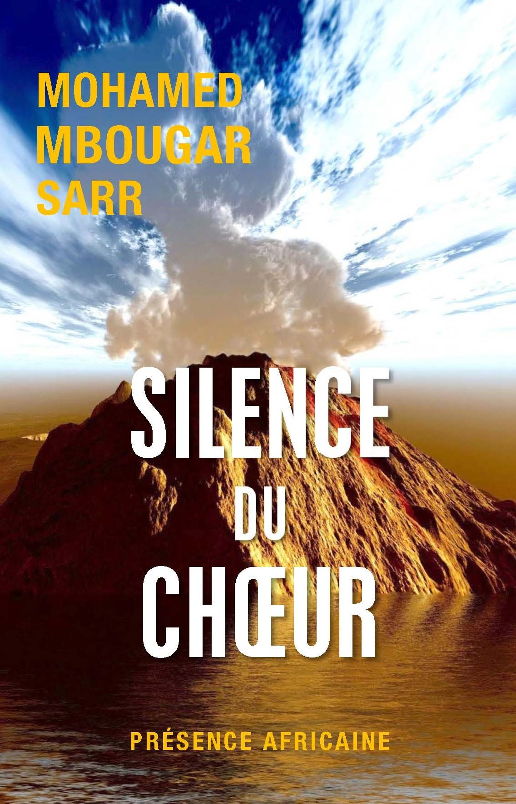

La littérature sénégalaise est une voix qui traverse les océans et les générations. Elle chante l’exil et la mémoire, elle raconte les luttes et les espérances, elle éclaire les traditions tout en questionnant la modernité. Chaque œuvre est une étoile dans le ciel de notre patrimoine, portant les récits des femmes et des hommes qui ont donné des mots à nos silences, des couleurs à nos combats, et des rêves à nos lendemains. Ici, les pages deviennent des rivages où se rencontrent l’Afrique et le monde, et où la parole des écrivains sénégalais continue de vibrer comme une poésie vivante.
 Kétala
Kétala
Les objets d’une défunte racontent sa vie.
 Celles qui attendent
Celles qui attendent
Portrait de femmes confrontées à l’absence.
 Aucune nuit ne sera noire
Aucune nuit ne sera noire
Récit d’espoir et de résilience.
 Les Veilleurs de Sangomar
Les Veilleurs de Sangomar
Nouvelle inspirée des légendes sénégalaises.
 Une si longue lettre
Une si longue lettre
Roman épistolaire sur la condition féminine.
 Un chant écarlate
Un chant écarlate
Histoire d’un couple mixte confronté aux préjugés.
 L’Enfant noir
L’Enfant noir
Autobiographie sur l’enfance en Guinée.
 Les Bouts de bois de Dieu
Les Bouts de bois de Dieu
Fresque sur la grève des cheminots.
 Terre Ceinte
Terre Ceinte
Resistance, pouvoir et survie dans un royaume assiege.
 Les gardiens du temple
Les gardiens du temple
Secrets et protection d'un savoir ancien menance.

Silence du choeurEchos muets, memoire des hommes et secrets enfouis.
 Plus secrete memoire des hommes
Plus secrete memoire des hommes
Traces invisibles, recits intimes du passe humain.